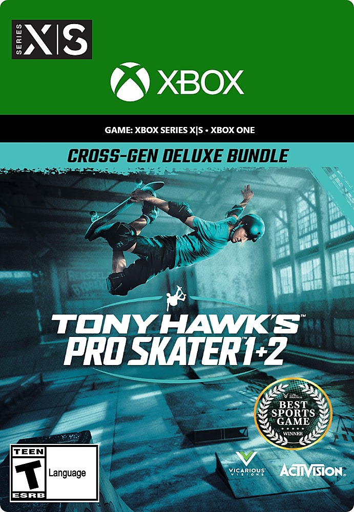

Tony Hawk's™ Pro Skater™ 1 + 2
Tony Hawk's Pro Skater 1 + 2 (comúnmente abreviado como THPS 1 + 2) es un videojuego de monopatinaje desarrollado por Vicarious Visions y publicado por Activision, que se lanzó en Microsoft Windows, PlayStation 4 y Xbox One el 4 de septiembre de 2020. Es una nueva versión de los dos primeros juegos de la serie Tony Hawk: Pro Skater, Tony Hawk Pro Skater (1999) y Tony Hawk Pro Skater 2 (2000) que fueron desarrollados originalmente por Neversoft. Es el primer juego importante de la serie en la década y el primero en más de 5 años desde Tony Hawk's Pro Skater 5 (2015).
Precio: $39.99